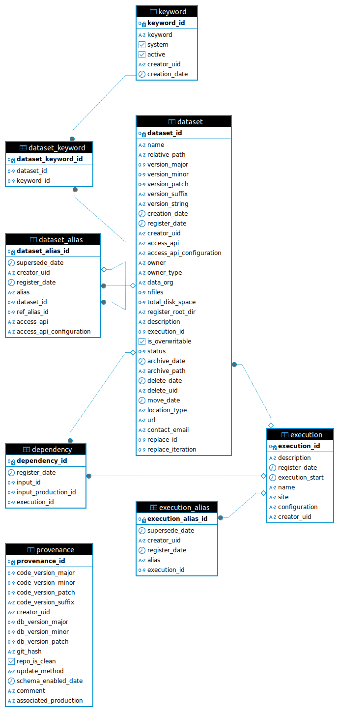

Database schema
A description of the data registry schema layout. Note that each schema in the database (e.g., the default and production schemas) follows the same structure.
The execution table
row |
description |
type |
|---|---|---|
execution_id |
Unique identifier for execution |
Integer |
description |
Short description of execution |
String |
register_date |
When was the execution registered in the database |
DateTime |
execution_start |
When was the execution performed at site |
DateTime |
name |
Identifies the code executed (e.g., could be pipeline name) |
String |
site |
Site where the code was run (e.g., NERSC) |
String |
configuration |
Path to execution configuration file (txt, YAML, TOML, etc). Ingested as raw text |
String |
creator_uid |
UID of person who registered the entry |
StringShort |
The provenance table
row |
description |
type |
|---|---|---|
provenance_id |
Unique identifier for this provenance entry |
Integer |
code_version_major |
Major version of code when this schema was created |
Integer |
code_version_minor |
Minor version of code when this schema was created |
Integer |
code_version_patch |
Patch version of code when this schema was created |
Integer |
creator_uid |
UID of person who registered the entry |
StringShort |
db_version_major |
Major version of schema |
Integer |
db_version_minor |
Minor version of schema |
Integer |
db_version_patch |
Patch version of schema |
Integer |
git_hash |
Git hash at time of schema creation |
String |
repo_is_clean |
Was git repo clean at schema creation? |
Boolean |
update_method |
What type of schema update does this entry relate to (‘CREATE’,’MODIFY’,’MIGRATE’) |
String |
schema_enabled_date |
Date schema was created/updated |
DateTime |
comment |
Comment relating to new provenance entry |
StringLong |
associated_production |
Name of production schema associated with this schema |
String |
The execution_alias table
row |
description |
type |
|---|---|---|
execution_alias_id |
Unique identifier for execution alias |
Integer |
supersede_date |
If a new entry has been added to the table with the same alias name (but different dataset_id), the old entry will be superseded. supersede_date in the old entry tracks when this happened. If the entry has not been superseded, supersede_date will be None |
DateTime |
creator_uid |
UID of person who registered the entry |
StringShort |
register_date |
Date the execution alias was registered |
DateTime |
alias |
User given execution alias name |
String |
execution_id |
Execution this alias is linked to |
Integer |
The dataset table
row |
description |
type |
|---|---|---|
dataset_id |
Unique identifier for this dataset |
Integer |
name |
Any convenient, evocative name for the human. Note the combination of name and version must be unique. |
String |
relative_path |
Relative path storing the data, relative to <root_dir>. If None, generated from the name and version_string |
String |
version_major |
Major version in semantic string (i.e., X.x.x) |
Integer |
version_minor |
Minor version in semantic string (i.e., x.X.x) |
Integer |
version_patch |
Patch version in semantic string (i.e., x.x.X) |
Integer |
version_string |
Version string |
String |
creation_date |
Dataset creation date |
DateTime |
register_date |
Date the dataset was registered |
DateTime |
creator_uid |
UID of person who registered the entry |
StringShort |
access_api |
Describes the software that can read the dataset (e.g., ‘GCRCatalogs’, ‘skyCatalogs’) |
StringShort |
access_api_configuration |
Additional (text) info which may be needed by access_api |
String |
owner |
Owner of the dataset (defaults to $USER) |
String |
owner_type |
Datasets owner type, can be ‘user’, ‘group’, ‘project’ or ‘production’. |
String |
data_org |
Dataset organisation (‘file’ or ‘directory’) |
String |
nfiles |
How many files are in the dataset |
Integer |
total_disk_space |
Total disk spaced used by the dataset |
Float |
register_root_dir |
The root_dir the dataset was originally ingested into |
String |
description |
User provided human-readable description of the dataset |
String |
execution_id |
Execution this dataset is linked to |
Integer |
is_overwritable |
True means this dataset can be overwritten in the future |
Boolean |
status |
What is the status of the dataset? This is a bitmask description of multiple states. Bit number 0=valid (1 if dataset is valid, 0 if copy data failed during creation), 1=deleted (1 if dataset is deleted and no longer on disk, 0 if data is still on disk, database entry is always kept) 3=archived (1 if data has been archived), 3=replaced (1 if the dataset has been overwritten/replaced). For example ‘0b0011` would be valid=1, deleted=1, archived=0 and replaced=0. |
Integer |
archive_date |
Dataset archive date |
DateTime |
archive_path |
Path the dataset was archived to |
String |
delete_date |
Date the dataset was deleted |
DateTime |
delete_uid |
User ID of person who deleted the dataset |
String |
move_date |
Date the dataset was last moved |
DateTime |
location_type |
What is the physical location of the data? ‘dataregistry’ means the data is located within the <root_dir> and managed by the dataregistry. External means the data is not managed by the dataregistry, either because it is off-site or because it is stored outside <root_dir> therefore there is only a database entry (in this case a url or contact_email must be provided during registration). ‘meta_only’ is for a legitimate entry involving no actual data, but possibly referring to other entries which do directly reference managed data, as may happen for some GCRCatalogs entries, and ‘dummy’ is a dataset for internal testing purposes only. The data registry will only attempt to manage data created with this field set to ‘dataregistry’. |
String |
url |
URL that points to the data (used in the case of external datasets, i.e., location_type=’external’). |
String |
contact_email |
Contact information for someone regarding the dataset. |
String |
replace_id |
Dataset ID of the new entry that replaced this dataset |
Integer |
replace_iteration |
How many times has this datset been overwritten? |
Integer |
The dependency table
row |
description |
type |
|---|---|---|
dependency_id |
Unique identifier for dependency |
Integer |
register_date |
Date the dependency was registered |
DateTime |
input_id |
Dataset this dependency is linked to (for every dependency, this, or input_production_id, must be non-null) |
Integer |
input_production_id |
Production dataset this dependency is linked to (for every dependency, this, or input_id, must be non-null) |
Integer |
execution_id |
Execution this dependency is linked to |
Integer |
The dataset_alias table
row |
description |
type |
|---|---|---|
dataset_alias_id |
Unique identifier for dataset alias |
Integer |
supersede_date |
If a new entry has been added to the table with the same alias name (but different dataset_id`or `alias_id), the old entry will be superseded. supersede_date in the old entry tracks when this happened. If the entry has not been superseded, supersede_date will be None |
DateTime |
creator_uid |
UID of person who registered the entry |
StringShort |
register_date |
Date the dataset alias was registered |
DateTime |
alias |
User-given dataset alias name |
String |
dataset_id |
Dataset this alias is linked to |
Integer |
ref_alias_id |
Alias this alias is linked to |
Integer |
access_api |
Describes the software that can read the dataset (e.g., ‘gcr-catalogs’, ‘skyCatalogs’) |
StringShort |
access_api_configuration |
Additional (text) info which may be needed by access_api |
String |